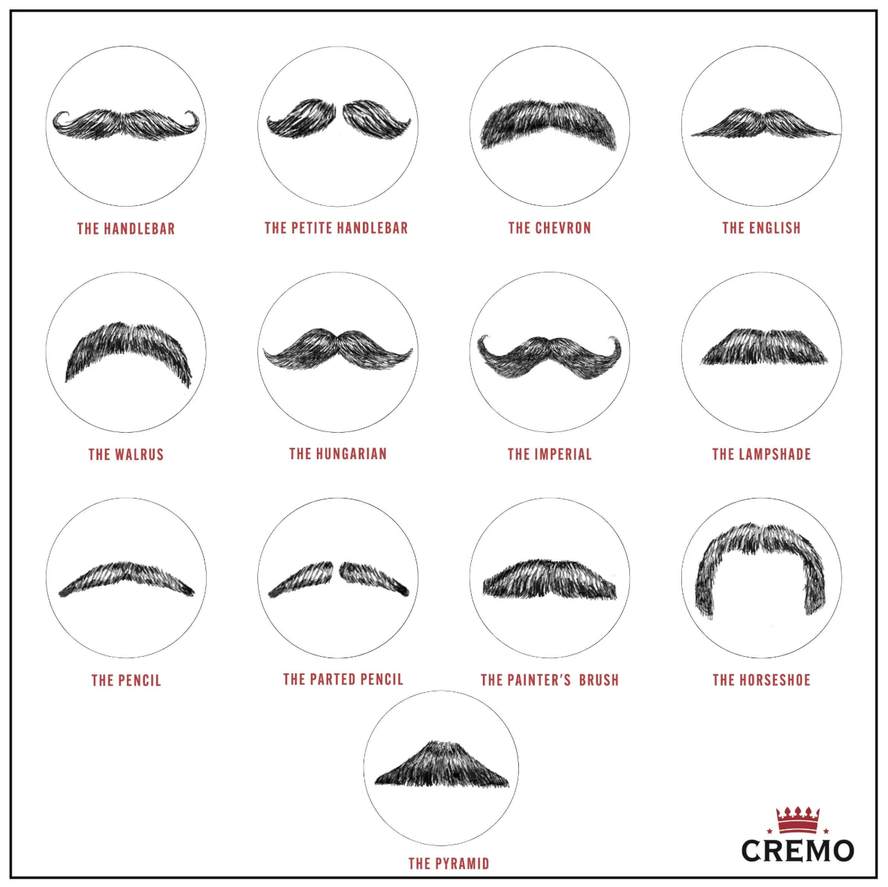

A férfi divat nem csak arról szól, hogy jó ruhákat viseljünk, hanem tudnunk kell, hogyan viseljük a ruhákat és főleg, hogy milyen tónusokkal és kiegészítőkkel (pl. nyakkendővel, férfi táskával) kombináljuk.
Szemüvegek, napszemüvegek, mandzsettagombok, övek, karórák, Nyakkendők, Táskák, övtáskák, pénztárcák.
Fontos az is, hogy például a nyakkendő ne térjen el túlságosan az öltöny színétől vagy olyan napszemüveget és egyéb kiegészítőket vegyünk, amik passzolnak hozzánk.
Kiegészítő lehet még egy bajusz vagy akár egy szakáll is. 